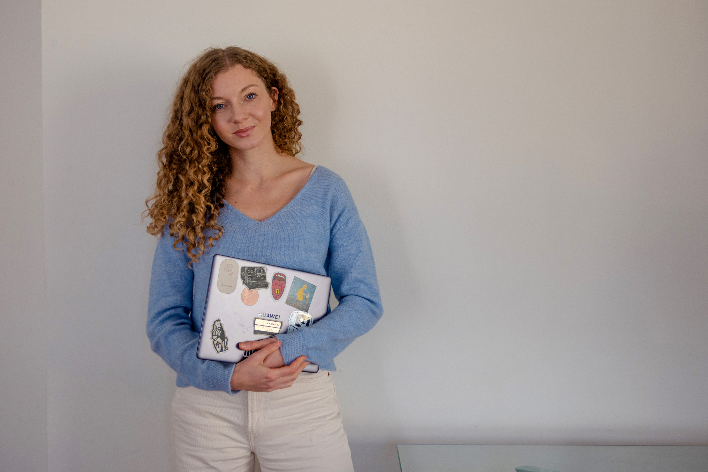

BRAND STRATEGY
BRAND STRATEGY
(ONLINE AND OFFLINE)
IDENTITY
MARKETING STRATEGY:
EMAIL FUNNELS
SOCIAL MEDIA AND INFLUENCER MARKETING
FOR GROWING PERSONAL BRANDS, WELLNESS AND CULTURAL PROJECTS,
AND IN F&B
I SPECIALISE IN GIVING ORDER AND CLARITY TO YOUR BRAND MESSAGING,
POSITION, AND VISION.
I USE RESEARCH, MARKET ANALYSIS, AND YOUR ASPIRATIONS
TO CREATE BRANDS THAT ARE COHERENT,
NOTICEABLE, AND HAVE A UNIQUE TOUCH.
I CREATE AN ONLINE PRESENCE OF THE BRAND AND OFFLINE EVENTS AND MEETUPS TO
STRENGTHEN YOUR
CONNECTION TO YOUR PEOPLE IN PERSON. MY SPECIAL FOCUS ON
COLLABORATIONS AND OFFLINE EVENTS
IS TO USE THE POWER OF CO-CREATION TO MAKE
MEANINGFUL EXPERIENCES AND AN IMPACT ON THE WORLD
AROUND US.